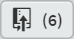

8.6
Deleting remote branches
There are currently two branches, the master branch and d-03-contact. Let’s assume that we’ve finished everything on the d-03-contact branch and we want to merge it back on to the master branch and then delete d-03-contact.
The current situation is that everything is up to date, the local and remote repositories match (this is because I just pushed all the changes to the remote at the end of the previous section).
To make sure there are no differences between the remote and local, we can do a fetch to check, click the button  .
.
Figure 8.63 Brackets—check local and remote are in synch
The fact that there are no numbers in the and buttons (highlighted) shows that there are no differences.
Next thing is to merge d-03-contact into the master branch locally. This is an identical process to that in § 6.7.1.
To merge branches, we must be on the receiving branch (the master branch). In Brackets switch to the master branch, click the arrow next to the selected branch in the left file tree pane and select from the drop down:
Figure 8.64 Brackets—switch back to master branch
You should now be on the master branch; the 03-contact.html file will no longer be visible in the file tree:
Figure 8.65 Brackets—on the master branch
To merge the branches, again click the arrow next to the master branch in the file tree and this time click the merge icon next to d-03-contact:
Figure 8.66 Brackets—merged d-03-contact branch
In the merge dialogue box, enter the merge message shown below:
Figure 8.67 Brackets—merge dialogue box
Click and the merge result box (there are no conflicts).
My new commit point is [da038e3], tag the new commit point with tag: P04.
Examining the commit history now shows:
Figure 8.68 Brackets—final commit history
Everything is back on the master branch (locally at least) and Brackets tells us there are six commits to push to the master branch on the remote repository.
This is because all those commits that were on the d-03-contact branch are now on the master branch (locally), but the remote repository knows nothing about them yet—hence six commits to push.
Make the push, click the button: .
As always, in the push dialogue box make sure the box is ticked, leave everything else and click .
Close the response box and open the remote repository in GitHub. I now have 14 commits in total on the master branch, matching the local repository (Figure 8.69):
Figure 8.69 GitHub—updated master branch
It is also showing the most recent P04 commit point [da038e3].
So that’s all good. Only thing now is to delete the d-03-contact branch, both locally and remotely.


{kind=link}
{kind=link}
{kind=link}
{kind=link}
{kind=link}
{kind=link}
{kind=link}
{kind=link}
{kind=link}
{kind=link}
{kind=link}
{kind=link}